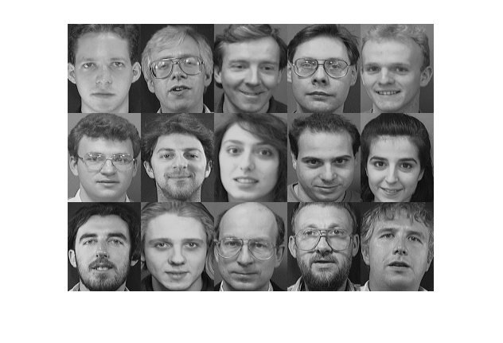
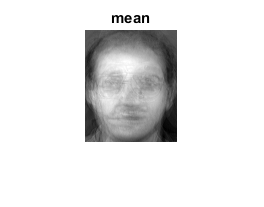
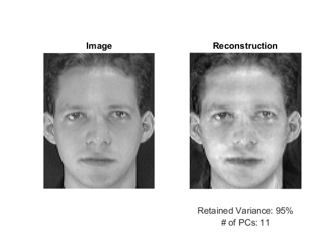

PCA for dimensionality reduction
An example using PCA for dimensionality reduction while maintaining an amount of variance.
This program demonstrates how to use OpenCV PCA with a specified amount of variance to retain.
The program takes as input a list of images. The author recommends using the first 15 faces of the AT&T face data set: http://www.cl.cam.ac.uk/research/dtg/attarchive/facedatabase.html
Sources:
Contents
Input images
get the list of images
dname = fullfile(mexopencv.root(), 'test', 'att_faces'); if isdir(dname) % NOTE: run facerec_demo.m to download dataset imgList = arrayfun(@(i) fullfile(['s' int2str(i)], '1.pgm'), 1:15, ... 'UniformOutput',false); else dname = fullfile(mexopencv.root(), 'test'); imgList = dir(fullfile(dname, 'left*.jpg')); imgList = {imgList.name}; end imgList = cellfun(@(f) fullfile(dname, f), imgList(:), 'UniformOutput',false); display(imgList)
imgList =
15×1 cell array
'C:\Users\Amro\Desktop\mexopencv\test\att_faces\s1\1.pgm'
'C:\Users\Amro\Desktop\mexopencv\test\att_faces\s2\1.pgm'
'C:\Users\Amro\Desktop\mexopencv\test\att_faces\s3\1.pgm'
'C:\Users\Amro\Desktop\mexopencv\test\att_faces\s4\1.pgm'
'C:\Users\Amro\Desktop\mexopencv\test\att_faces\s5\1.pgm'
'C:\Users\Amro\Desktop\mexopencv\test\att_faces\s6\1.pgm'
'C:\Users\Amro\Desktop\mexopencv\test\att_faces\s7\1.pgm'
'C:\Users\Amro\Desktop\mexopencv\test\att_faces\s8\1.pgm'
'C:\Users\Amro\Desktop\mexopencv\test\att_faces\s9\1.pgm'
'C:\Users\Amro\Desktop\mexopencv\test\att_faces\s10\1.pgm'
'C:\Users\Amro\Desktop\mexopencv\test\att_faces\s11\1.pgm'
'C:\Users\Amro\Desktop\mexopencv\test\att_faces\s12\1.pgm'
'C:\Users\Amro\Desktop\mexopencv\test\att_faces\s13\1.pgm'
'C:\Users\Amro\Desktop\mexopencv\test\att_faces\s14\1.pgm'
'C:\Users\Amro\Desktop\mexopencv\test\att_faces\s15\1.pgm'
read in the data
images = cellfun(@imread, imgList, 'UniformOutput',false); sz = size(images{1}); assert(numel(images) >= 2, ... ['This demo needs at least 2 images to work. ' ... 'Please add more images to your data set!']); assert(ndims(sz) == 2, 'Expects grayscale images');
preview images
if mexopencv.require('images') montage(cat(4, images{:})); end
PCA
Reshape and stack images into a row Matrix
data = zeros(numel(images), prod(sz)); for i=1:numel(images) data(i,:) = double(images{i}(:)) / 255; end whos data
Name Size Bytes Class Attributes data 15x10304 1236480 double
perform PCA
RET_VAR = 95; pca = cv.PCA(data, 'DataAs','Row', 'RetainedVariance',RET_VAR/100); display(pca)
pca =
PCA with properties:
id: 7
eigenvectors: [11×10304 double]
eigenvalues: [11×1 double]
mean: [1×10304 double]
display the "average image"
figure, imshow(reshape(pca.mean, sz), []), title('mean')Demonstration of the effect of retainedVariance on the first image
% project into the eigenspace, thus the image becomes a "point" img1 = data(1,:); point = pca.project(img1); % re-create the image from the "point" img1R = pca.backProject(point); % reshape from a row vector into image shape img1R = reshape(img1R, sz); % re-scale for displaying purposes if true img1R = cv.normalize(img1R, ... 'NormType','MinMax', 'Alpha',0, 'Beta',255, 'DType','uint8'); else img1R = (img1R - min(img1R(:))) ./ (max(img1R(:)) - min(img1R(:))); img1R = uint8(img1R * 255); end % display result figure subplot(121), imshow(reshape(img1,sz)), title('Image') subplot(122), imshow(img1R), title('Reconstruction') xlabel({sprintf('Retained Variance: %d%%',RET_VAR); sprintf('# of PCs: %d', size(pca.eigenvectors,1))})